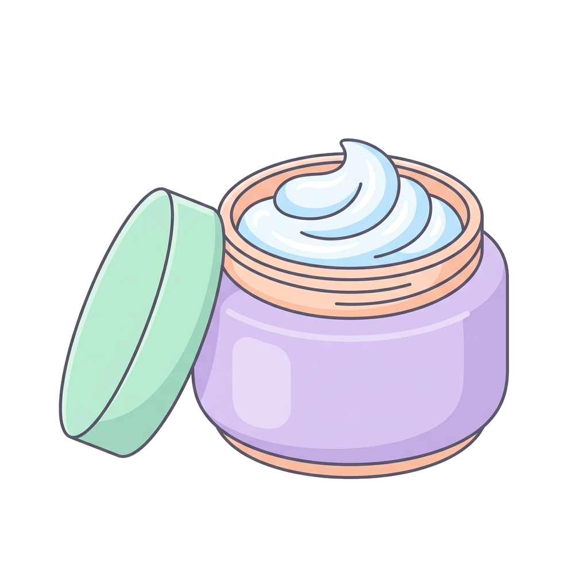
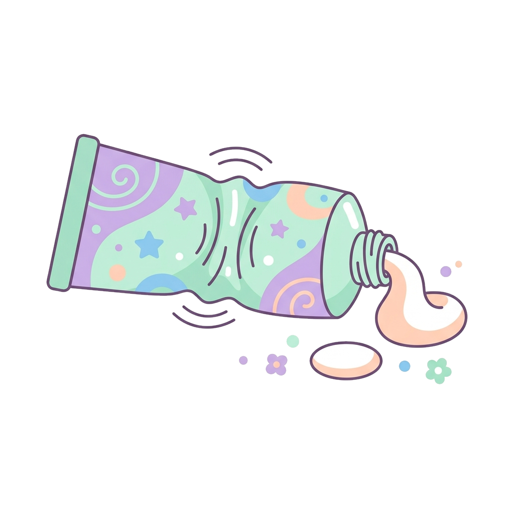
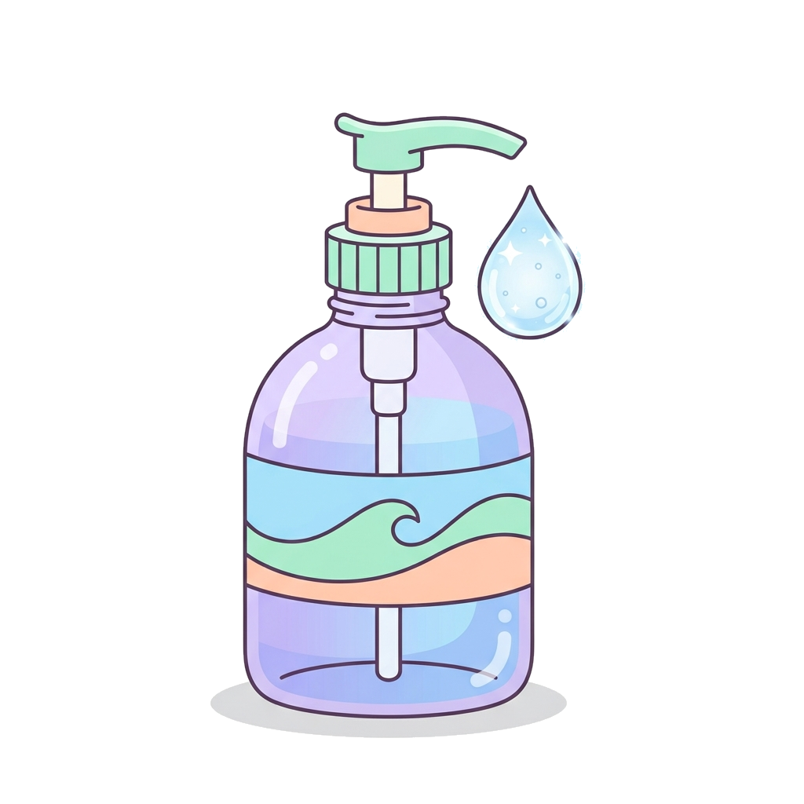
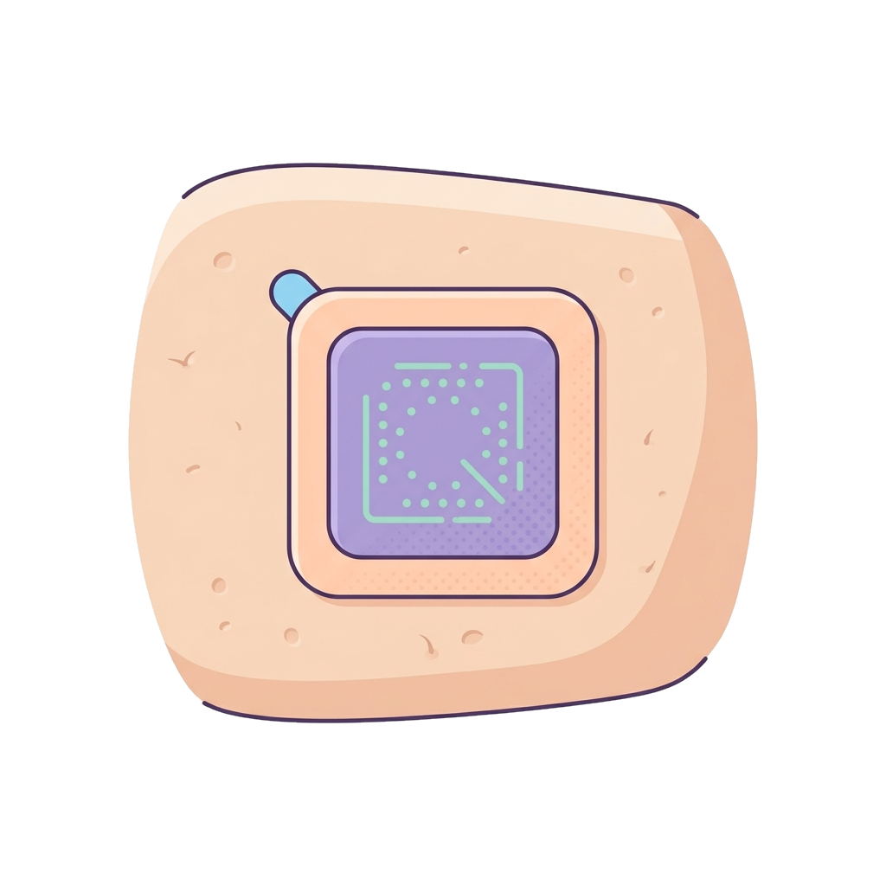
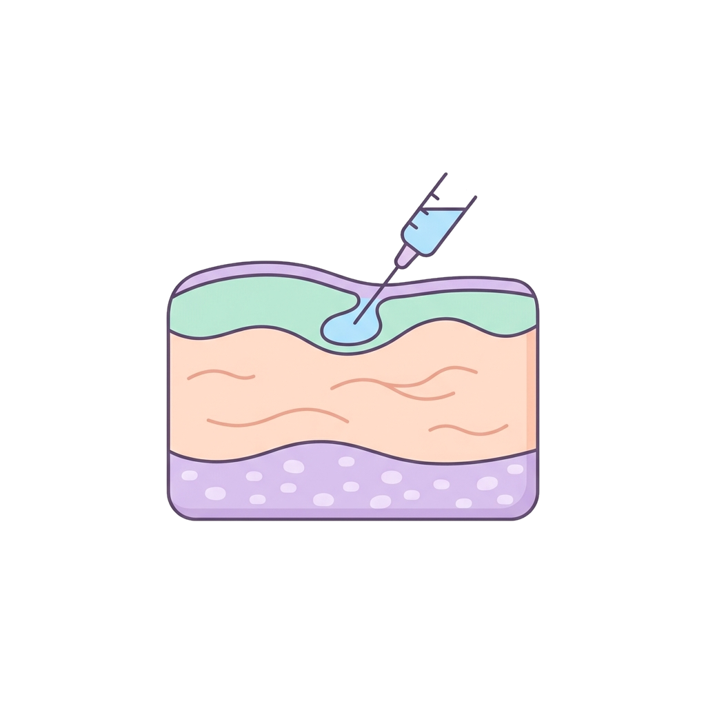

Preparazione di consistenza semisolida composta da un'emulsione (contiene una fase acquosa e una oleosa), generalmente per applicazione esterna e topica.

Preparato per pelle o mucose, con una base in genere non acquosa (grassa, lipofila). Contiene principi attivi disciolti o dispersi in concentrazioni ridotte.

Forma semisolida composta da un agente gelificante (per esempio polimeri) che conferisce fermezza a una soluzione o dispersione colloidale.
A differenza della crema, che contiene acqua, l'unguento è più oleoso e occlusivo.
È il sistema in cui particelle di dimensioni molto ridotte (tra 1 nm e 1 µm) sono distribuite uniformemente in un liquido, senza precipitare: è ciò che forma la struttura del gel.

Funziona come una «scorciatoia»: rilascia il farmaco attraverso la pelle (via percutanea), ma non serve a trattare la pelle stessa.

Il farmaco attraversa gli strati fino al derma e raggiunge il flusso sanguigno: da lì si diffonde in tutto il corpo (effetto sistemico).